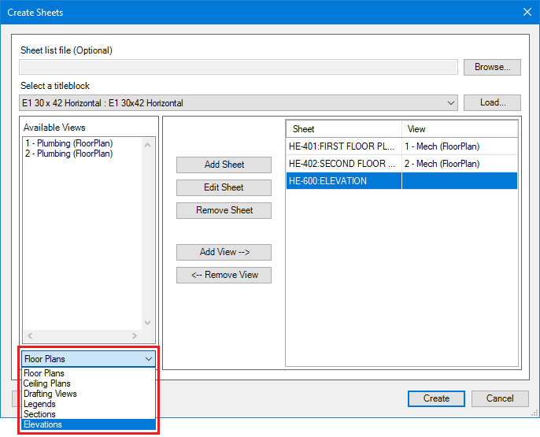

Create Sheets
Refer to the list below for descriptions of the available options
- Sheet list file (Optional): Load a set of sheets from a CSV (Comma delimited) (*.csv) file type. See example image below.
- Column A: Sheet Number
- Column B: Sheet Name
- Select a titleblock: The titleblock that will be used to create the sheet(s). Load allows you to add a titleblock to the project if the one you need is not already loaded.
- Available Views: Contains all Views that can be added to a Sheet. If the View you are looking for isn't in the list, it is already assigned to a Sheet. See View Type for filter options.
- Sheet: Contains all the sheets you have loaded using Browse or created using Add Sheet.
- View (Optional): The view that will be added to its neighboring sheet in the Sheet column.
- Add Sheet: If you chose not to load sheets from a CSV (Comma delimited) (*.csv) file you can add them with Add Sheet. Provide a sheet number and sheet name and click OK.
- Edit Sheet: Allows you to revise the information of a sheet from the Sheet column. Select the Sheet you want to edit and click Edit Sheet.
- Remove Sheet: Allows you to remove a Sheet from the list. Select the Sheet you want to remove and click Remove Sheet. If there is a view assigned to the sheet it will be available to use again.
- Add View: Adds a View to a Sheet. Follow the steps below to add a view to a sheet.
- Select the Sheet that you want to add the view to.
- Select the View you want to add from Available Views.
- Click Add View -->.
- Remove View: Removes a View from a Sheet. Select the Sheet you want to remove the View from and click <--Remove View to add it back to Available Views.
- View Type: Filter between different types of views. See image below.
